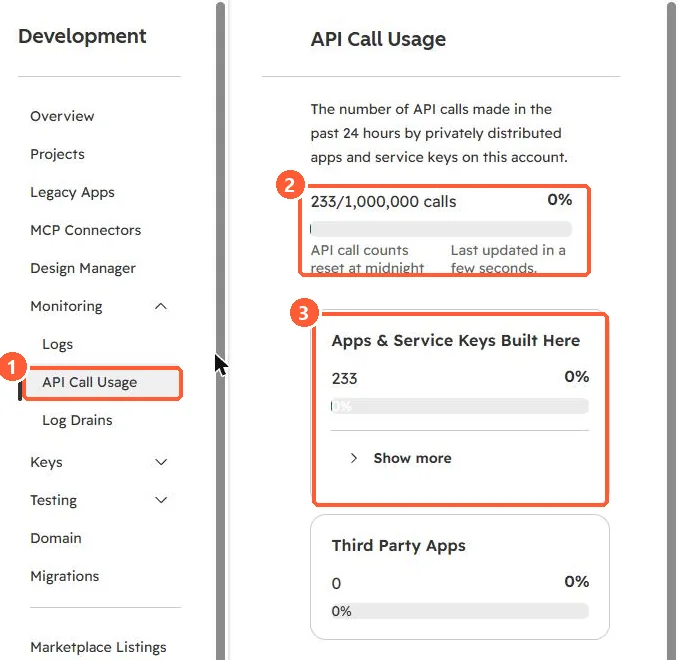
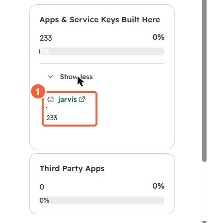

Short answer
Private apps and service keys get 100 requests per 10 seconds on Free and Starter and 190 per 10 seconds on Professional and Enterprise, per app. The daily cap is per account: 250,000 (Free, Starter), 625,000 (Professional) or 1,000,000 (Enterprise). Public OAuth apps get 110 per 10 seconds. The CRM search API has its own limit of five requests per second per account and stops at 10,000 results per query. Go over any of these and every call returns 429 until the window resets, and those rejected calls still count toward the daily total.
1. The limits, by app type
The number that matters most is the 10-second burst limit. A script that loops over records with no pause hits it in a second or two, long before the daily cap is anywhere close.
| App type | Per 10 seconds | Per day (whole account) |
|---|---|---|
| Private app or service key, Free and Starter | 100 per app | 250,000 |
| Private app or service key, Professional | 190 per app | 625,000 |
| Private app or service key, Enterprise | 190 per app | 1,000,000 |
| With the API limit increase add-on (any tier) | 250 per app | +1,000,000 per add-on, two add-ons max |
| Public OAuth app (Marketplace) | 110 | Not listed separately |
| CRM search endpoints | 5 per second, per account | Counts toward the daily total |
Two details catch people. The burst limit is per app, so two private apps in the same portal each get their own 190. The daily limit is shared by every private app and service key in the account, so a noisy integration can starve a quiet one.
2. See your usage in HubSpot
Go to Development, Monitoring, API Call Usage (1). The top counter is the last 24 hours for the whole account against the daily cap (2), and the card below splits it between apps and service keys built in the portal and third-party apps (3). Counts reset at midnight.


Click Show more to see which app made the calls (1). When the daily number climbs and nobody knows why, this is the first place to look.


The 233 in that screenshot is from a test I ran on my Enterprise demo portal on November 14, 2026: one single call, then 220 calls fired in parallel, then 12 parallel search requests. Of the 220, exactly 189 succeeded and 31 got a 429, which matches the 190 per 10 seconds limit to the call. All 233 requests, the rejected ones included, landed in the daily count.
3. What a 429 looks like
Every normal response carries the limit headers. This is the first call from that test:
X-HubSpot-RateLimit-Daily: 1000000
X-HubSpot-RateLimit-Daily-Remaining: 999999
X-HubSpot-RateLimit-Interval-Milliseconds: 10000
X-HubSpot-RateLimit-Max: 190
X-HubSpot-RateLimit-Remaining: 189
X-HubSpot-RateLimit-Secondly: 19
X-HubSpot-RateLimit-Secondly-Remaining: 18HubSpot's docs mark the two Secondly headers as deprecated, but they were still being sent in November 2026. Do not build logic on them. Watch X-HubSpot-RateLimit-Remaining instead.
Once the window is used up, the body tells you which limit you hit in policyName:
{
"status": "error",
"message": "You have reached your ten_secondly_rolling limit.",
"errorType": "RATE_LIMIT",
"policyName": "TEN_SECONDLY_ROLLING"
}TEN_SECONDLY_ROLLING: the per-app burst limit. Slow down and the next window clears it.SECONDLY: the search API's five per second. In my test the sixth parallel search request was rejected.DAILY: the account cap. Nothing clears it until the reset at midnight, so stop the job instead of retrying.
HubSpot also says error responses should stay under 5% of your daily requests, and Marketplace apps must stay under that to be certified. High volume can surface as 5xx errors too, so treat those like 429s.
4. Handle 429s in your code
Throttle before you hit the limit, then back off when you do. A minimal Python pattern:
import time, requests
def hubspot_get(url, token, tries=5):
for attempt in range(tries):
r = requests.get(url, headers={"Authorization": f"Bearer {token}"})
if r.status_code != 429 and r.status_code < 500:
return r
policy = r.json().get("policyName", "") if r.status_code == 429 else ""
if policy == "DAILY":
raise RuntimeError("Daily HubSpot API limit reached, stop until midnight")
time.sleep(2 + attempt * 3) # wait out the 10-second window
r.raise_for_status()If you use the official Node client, @hubspot/api-client has retry and rate limiting options built in, so use those instead of writing your own.
Inside a workflow custom code action you do not need a retry loop. If an API call fails with a rate limit error, or a 429 or 5xx from axios or @hubspot/api-client, HubSpot retries the whole action for up to three days, starting one minute after the failure. Let the error throw. If you catch it and carry on, the retry never happens.
5. The search API: five per second and 10,000 results
Search is the limit people hit without realizing it is separate. The docs list five requests per second per account, 200 records per page, 10,000 total results per query (paging past that returns a 400), a 3,000-character query body, and up to five filter groups with six filters each and 18 in total. Search responses in my test still carried the two daily headers, but none of the 10-second ones, so you cannot read your remaining search budget from the response.
To read more than 10,000 records, sort by a stable property, page with after, and when you get close to 10,000 start a new query filtered from the last value you received:
POST https://api.hubapi.com/crm/v3/objects/contacts/search
{
"filterGroups": [
{ "filters": [ { "propertyName": "createdate", "operator": "GTE", "value": "1767225600000" } ] }
],
"sorts": [ { "propertyName": "createdate", "direction": "ASCENDING" } ],
"properties": ["email", "createdate"],
"limit": 200,
"after": 0
}Deduplicate on record ID, because records that share the boundary timestamp come back twice. Also keep in mind that new and updated records can take a few moments to show up in search, archived records never appear, and only one sort rule is allowed per search. If you need every record of an object, page through the list endpoints instead: they fall under the normal burst limit, not the five per second search limit.
6. Make fewer calls
- Batch endpoints. One batch call reads, creates or updates up to 100 records and counts as one request. See batch upsert.
- Webhooks instead of polling. Let HubSpot tell you when a record changes instead of asking every few minutes. See webhooks.
- Cache what rarely changes. Owners, pipelines and property definitions do not need a fresh call per record.
- Ask for only the properties you use. It does not change the count, but smaller responses keep loops fast enough that throttling is easy to reason about.
7. When the add-on is worth it
The API limit increase add-on raises the burst limit to 250 per 10 seconds and adds 1,000,000 calls a day per add-on, with a maximum of two. It helps when a well-behaved integration genuinely needs the volume, such as a nightly sync of a very large database. It does not fix a script with no throttling: that script will hit 250 almost as fast as it hit 190.
8. What is changing for 2027
The limits themselves have no announced change. The bigger shift is versioning. Since March 30, 2026, HubSpot's REST APIs use date-based versions, so /crm/v3/objects/contacts has a counterpart at /crm/objects/2026-09/contacts. New versions ship every March and September, and each is supported for 18 months.
- Current v4 APIs and the
/2025-09/CRM APIs become unsupported when/2027-03/is released in March 2027. Unsupported means they may keep working but are no longer guaranteed fixes or stability. - v1 to v3 endpoints keep working for now. HubSpot says their support timeline will be announced later.
- Many v3 endpoints have identical contracts in
2026-09, so the migration is often just the URL. Check the request body and response for each endpoint before you switch.
If you are writing new rate-limit handling now, build it against the date-based URLs so you only touch the code once. Legacy private apps are part of the same move: see private apps moved to legacy apps.
Common questions
Why do I get 429s when I am nowhere near the daily limit?
Because the burst limit is what you hit. 190 calls in 10 seconds is 19 a second. A loop with no delay, or a few parallel workers, passes that immediately. Check policyName: if it says TEN_SECONDLY_ROLLING, add throttling.
I am under five search requests per second and still get 429s from search. Why?
The search limit is per account, not per app or per token. Every integration in the portal that uses search shares those five requests a second.
Do failed calls count toward the daily limit?
In my test they did. The 31 rejected calls and the 7 rejected searches all showed up in the 24-hour total, and the daily remaining header went down on the 429 responses too. A retry loop with no backoff burns the daily budget while getting nothing done.
Several tools connect to my portal. Do they share a limit?
Private apps and service keys built in the portal share the daily cap but each has its own burst limit. Marketplace apps installed through OAuth have their own 110 per 10 seconds. A tool like Make or Zapier connects through one app, so every scenario or zap that uses that connection draws from the same limit.
Can HubSpot raise the limit for me without the add-on?
HubSpot's documented options are the API limit increase add-on (up to two) and reducing calls with batch endpoints, caching and webhooks.
Sources
- HubSpot developer docs: API usage guidelines and limits
- HubSpot developer docs: CRM search API
- HubSpot developer docs: Error handling and retries
- HubSpot developer docs: Custom code actions
- HubSpot developer changelog: Introducing date-based API versioning (March 30, 2026)
- HubSpot developer docs: Legacy API migration guide
- HubSpot Community: ten_secondly_rolling limit question
- HubSpot Community: Resolve 429 status error